Calculatoarele sunt echipamente complexe pentru prelucrarea datelor si gestionarea informatiei
Pentru a introduce notiunea de informatie ,se presupune ca intr-o situatie oarecare pot avea loc N evenimente egal probabile ,
probabilitatea unui eveniment fiind p=1/N.Prin realizarea unui eveniment din cele N posibile se obtine informatie.
Prin definitie informatia este i=log1/p=logN
Informatia se transmite prin semnal. Semnalul este o manifestare fizica (unda electromagnetica ,unda sonora etc ) capabila de a se propaga printr-un mediu dat.
Semnalele sunt supuse perturbatiilor. Se numeste perturbatie un semnal care modifica semnalul aleator util care transmite informatie,
micsorind cantitatea de informatie transmisa.
Mesajul este un semnal ce corespunde unei realizari particulare din ansamblul de idei,imagini,date care trebuie transmise unui
corespondent.
Sursa de informatie este mecanismul prin care ,din multimea mesajelor posibile se alege intr-un mod imprevizibil (pentru corespondent)
un mesaj particular destinat a fi transmis unui corespondent.
Termeni de baza
Hardware - echipamentele fizice care compun un sistem de calcul
Software - programele pe care le executa calculatorul in general
Aplicatii Software - programele destinate sa rezolve o anumita problema
Program - un set de instructiuni care instruiesc calculatorul pas cu pas ce are de facut
Programator - persoana care scrie programe pentru calculator
Utilizatori - persoanele care cumpara si utilizeaza softul pentru calculator
Notiunea de data si informatie
Calculatoarele sunt echipamente complexe pentru prelucrarea si gestionarea informatiei.
Prin definitie informatia se defineste ca fiind i=ln(1/p), unde p este probabilitatea de a avea loc
un eveniment din N cazuri posibile. Informatia devine deci i=ln(N). Informatia despre un eveniment este cu
atat mai valoroasa deci cu cat probabilitatea unui eveniment de a avea loc este mai mica.
Un calculator este un sistem care accepta date la intrare si le prelucreaza dupa un
program (algoritm), rezultind informatii utile pe care apoi le furnizeaza la iesire
Componentele de baza ale unui calculator
Dispozitivele de intrare primesc datele si le trimit calculatoruluiintr-o forma
in care calculatorul le poate intelege si utiliza.
Unitatea centrala de prelucrare CPU (Central Processing Unit)
contine circuite electronicepentru prelucrarea datelor de intrare si transformarea lor in
informatii care sunt ulterior oferite la iesire
Memoria Tine temporar date si instructiuni necesare CPU
Dispozitive de iesire fac posibila utilizarea datelor prelucrate.
Dispozitive de memore externa (secundara)
Stocheaza datele si programele.
Magistrala sistem-reprezinta calea fizica prin care se interconecteaza componentele
calculatorului.
Latimea magistralei sistem depinde de marimea cuvintelor de date
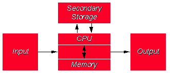
Structura von Neumann
Structura unui calculator se bazeaza schema bloc din figura de jos numita si structura von Neumann
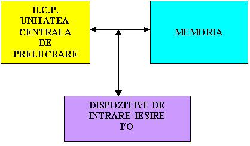
Un calculator este un sistem capabil sa prelucreze, dupa un anumit
algoritm(program) datele primite la intrare, si sa furnizeze informatii la iesire.
Datele primite la intrare prin intermediul sistemului de I/O sunt
pastrate in memorie de unde sunt transferate in unitatea centrala UC si prelucrate conform unui
algoritm (program) aflat tot in memorie, introdus in prealabil. In urma prelucrarii datelor
rezulta informatii care se stocheaza in memorie si sunt transmise pentru afisare prin
intermediul sistemului I/O.
Reprezentarea informatiilor in calculator
Datele si informatile sunt vehiculate intre partile componente
ale calculatorului prin intermadiul unor cai de legatura numite magistrale.
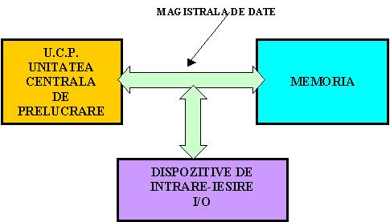
Pentru a putea fi transmisa, informatia are nevoie de un suport
fizic numit semnal.
Semnalul este o manifestare fizica (unda electromagnetica,
unda sonora, interactiune mecanica ect.) capabila de a se propaga printr-un mediu dat.
Mesajul este un semnal ce corespunde
unei realizari particulare din ansamblul de date care trebuie transmis unui corespondent.
In calculatoarele actuale semnalul folosit este semnalul electric.
Magistrala este realizata deci din conductoare electrice prin care
se poate propaga semnal electric.
Semnalul electric este supus perturbatiilor. Se numeste perturbatie, un
semnal care modifica semnalul aleator util care transporta informatie, micsorand cantitatea de informatie
transmisa.
Pentru a reduce la minim posibil influenta zgomotelor asupra semnalului util
s-a ales utilizarea semnaluli electric digital.
Semnalul digital are doua stari 1 si 0 adica prezenta semnal
si lipsa semnal adica semnal electric cu tensiunea 5v si semnal electric cu tensiunea 0v. Acest tip
de semnal poate transporta numai informatie elementara de tipul Fals si Adevarat.
Pentru a utiliza semnalul digital, informatia trebuie deci codificata
digital sau binar.
Orce tip de informatie poate fi codificata numeric, dupa care poate fi
transformata in numere binare. Este deci posibila realizarea de calculatoare care sa utilizeze semnalul
electric digital pentru a vehicula orce tip de informatie sub forma binara.
In functie de numarul de linii electrice se pot transmite simultan mai
multe semnale electrice.
Vom numi bit de informatie informatia elementara (cea mai mica cantitate
de informatie,informatia 1-adevarat sau informatia 0-fals.)
Pe o magistrala cu n linii electrice se pot deci transmite n biti.
Numarul de linii este impus de nivelul tehnologic.
Dupa aparitia unitatilor centrale integrate numite microprocesoare, au fost realizate primele
calculatoare personale.
Primele calculatoare personale realizate cu microprocesoare foloseau
magistrale de 8 linii, deci pe magistrala se puteau vehicula informatii de maxim 8 biti.Cei opt biti de
informatie luati impreuna formeaza un octet sau un byte.
Primele calculatoare PC-IBM compatible au fost realizate cu microprocesoare de
16 biti. Cantitatea de informatie vehiculata era deci compusa din 16 biti(cuvant sau word)
Calculatoarele actuale folosesc procesoare de 32 biti (dword-double word) si 64 de biti(qword-quad word)
* Informatia din memoria calculatorului este codificata binar si afisata in
cod hexazecimal
* Orice fel de informatie (programe, valori numerice, texte, imagini, sunete, etc.)
este codificata numeric in baza 2 (Codificare binara). Se grupeaza apoi cate 4 biti si se
reprezinta informatia pe ecran in cod hexazecimal pentru o mai usoara citire.
* Tabelul de valori hexa afisat mai sus, reprezinta continutul memoriei
de la o anumita adresa.
* Datele exprimate in hexazecimal de la aceasta adresa pot codifica orce
fel de informatie. Ele pot reprezenta de exemplu o portiune de imagine, un text etc.
Nu putem descifra ce reprezinta aceste valori decat daca incepem decodificarea de la adresa
0000:0000 si decodificam pas cu pas continutul meemoriei functie de pasii facuti de calculator de
la pornire pana in momentul afisarii, lucru aproape inposibil.
Memoria este realizata dintr-o sucsesiune de locatii de memorie.
Locatia de memorie este structura fizica ce poate memora 16 biti de informatie(word).
Memoria este astfel realizata incat sa poata prelua de pe magistrala un cuvant pe care sa-l
memoreze(scrie) in orce locatie si totodata sa se poata aduce pe magistrala (citi) orce cuvant
din orce locatie. Pentru a realiza aceste cerinte, fiecare locatie trebuie sa aiba o "adresa"
precisa. Adresele sunt atribuite in ordine fiecarei locatii. Pentru orce operatie (de citire sau
scriere in sau din memorie) este deci necesar sa precizam continutul cuvantului, felul operatiei
si adresa locatiei la care se refera operatia. Structuara unui calculator se poate deci detalia astfel:
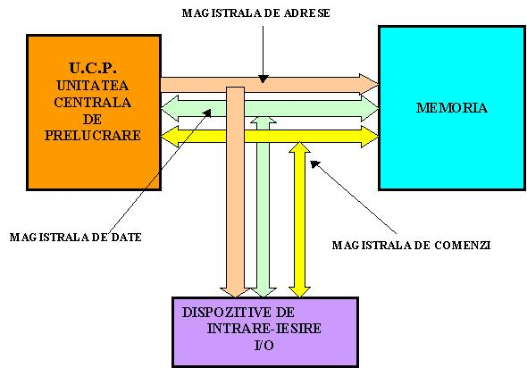
La un moment dat pe magistrala se face o singura operatei (de citire sau scriere)
Coordonarea operatiilor pe magistrala se face de UC prin magistrala de comenzi prin care se traansmit
comenzile necesare pentru fiecare operatiune.
Unitatea centrala UC (realizata pe baza MICROPROCESOR-ului) este cea care coordoneaza
toate operatiile intr-un calculator.
Programul si datele sunt incarcate in memorie sub controlul UC. Dupa aceasta operatie UC formeaza
pe magistrala de adrese adresa primei locatii de unde incepe programul. UC pune si comenzile
corespunzatoare pentru operatiile dorite (scriere sau citire) pe magistrala de comenzi.
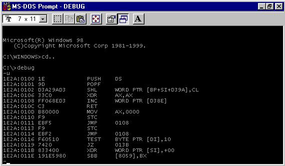
Prima instructiune de la adresa specificata de UC este pusa de memorie pe magistrala de date si
UC-u o poate citi si pe urma executa. Ciclul se repeta pentru urmatoarele instructiuni din program pana
la terminarea programului. Rezultatele prelucrarii sunt puse de UC in memorie prin operatii de
scriere pe parcursul rularii programului. Din memorie rezultatele sunt trimise la dispozitivele
de iesire pentru afisare.
Viteza cu care sunt executate operatiile de UC este data de frecventa de lucru a Microprocesorului.
Frecventa de lucru actuala atinge ordinul Mhz.
Schema bloc functionala a unui calculator
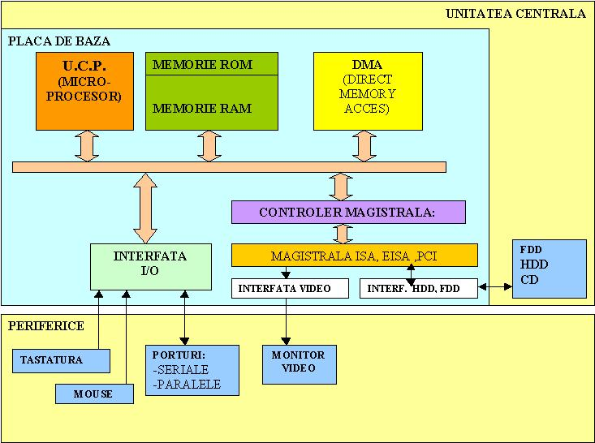
Unitatea centrala
Periferice (Tastatura, Mouse, Monitor video, ..)
Unitatea centrala contine:
PLACA DE BAZA
UCP
Memoria
Diferite interfete
MEMORIA EXTERNA (FDD, HDD, CD)
Exemplu de implementare
Schema bloc a unei variante constructive a placii de baza este prezentata in figura de sus.
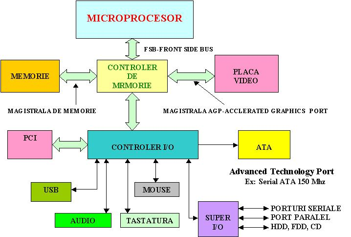
Imagini placi de baza
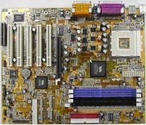
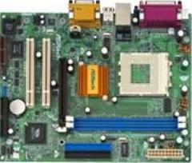
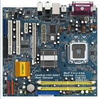
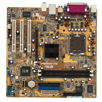
In imaginile de mai jos sunt prezentate doua placi de baza .